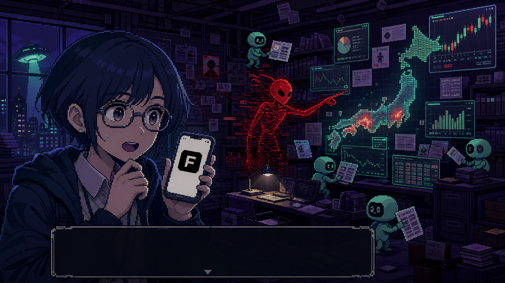
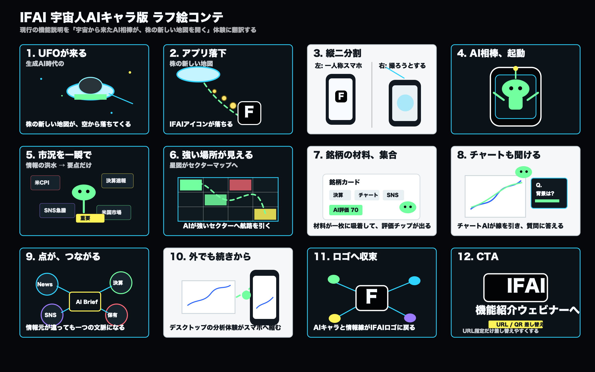

未確認シグナル
夜の市場キオスク。窓に株価、SNS、ニュース。UFOの光がスマホに落ちる。
また、市場に変なサインが出てる。
まずこの2枚の温度で方向確認。 冒頭は夜の街とUFO。 中盤は調査室でAIが市場情報を解体する。

絵柄そのもののコピーではなく、 参考の文法をIFAIの世界に翻訳する。
45秒想定。 会話ADVの画面文法で、 機能説明を“市場の異変を解く”体験に変える。
夜の市場キオスク。窓に株価、SNS、ニュース。UFOの光がスマホに落ちる。
また、市場に変なサインが出てる。
赤いグリッチAIが出現。日本地図型のチャートに赤いピンが灯る。
上がる理由の痕跡だったっけ...?
スマホのIFAIアイコンがノイズを吸い、会話UIが立ち上がる。
IFAI、解析開始。
米国市場、為替、金利、ニュースの紙片が壁に貼られ、不要情報が剥がれる。
今朝見るべき材料だけ、残す。
壁面に日本地図型ヒートマップ。強いセクターだけ鈍く発光する。
市場の地図が、見える。
決算、チャート、SNS、ニュースが銘柄ごとの調査ファイルへ閉じる。
一枚のカルテへ。
赤いシグナルがスコアを指差す。IFAI評価が大きくポップ。
プロの視点を、AI評価に。
チャートが証言台のように表示され、AIが線を引きながら答える。
この上昇、なぜ?
2本のチャート線が重なり、疑惑の赤線が根拠のシアン線へ変わる。
比較すれば、見えてくる。
小AIたちがニュース、決算、SNS、保有を解析して中央のブリーフに集める。
点が、つながる。
調査室の情報がスマホ画面に縮む。夜道でも同じUIが続く。
外でも、調査は続く。
暗転。IFAIロゴとURL/QR。最後だけ差し替えやすく設計。
機能紹介ウェビナーへ
「楽して稼げる」は避ける。 画でワクワク、言葉は“見える・残す・つながる”へ。
前案は構造確認用。 共有用ページではこの方向に切り替える。

共有先には、 この4点だけ見てもらうと返事が集めやすい。